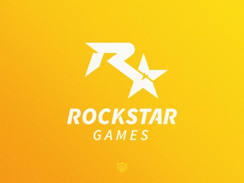

Rockstar Games, Inc
Rockstar Games is een Amerikaanse uitgever van computerspellen die is aangesloten bij TakeTwo Interactive. Het bedrijf werd in 1998 opgericht door Sam en Dan Houser, Terry Donovan en Jamie King, die voor TakeTwo Interactive werkten. Het bedrijf is verantwoordelijk voor het publiceren van de series Grand Theft Auto (GTA), Max Payne, Red Dead Redemption (RDR), Midnight Club en meer.Ontwikkelingstudio's
Rockstar Games heeft verschillende ontwikkelstudio's. Alle games worden ook door hen uitgebracht. Als een game door meerdere studio's wordt ontwikkeld, worden de ontwikkelaars gezamenlijk Rockstar Games genoemd. Hieronder staat een tabel met alle actieve ontwikkelstudio's.

| Studio | Locatie | Actief |
|---|---|---|
| Rockstar India | Bangalore | 2016-heden |
| Rockstar Leeds | West Yorkshire | 2004-heden |
| Rockstar Lincoln | Lincoln | 1997-heden |
| Rockstar London | London | 2005-heden |
| Rockstar New England | Andover, MA | 2008-heden |
| Rockstar North | Edinburgh | 1999-heden |
| Rockstar San Diego | Carlsbad, CA | 2002-heden |
| Rockstar Toronto | Oakville, ON | 1999-heden |
| Rockstar Dundee | Dundee | 2020-heden |